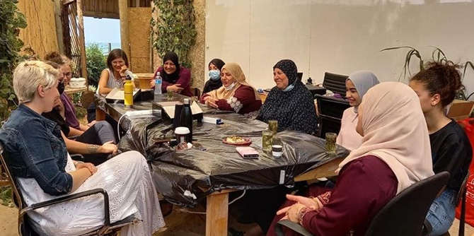
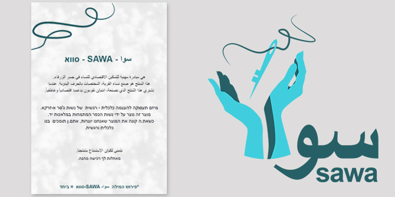

Photo courtesy of Michal Sadeh-Goldvasser and Celia Jubari
The Arab town of Jisr az-Zarqa in northern Israel, located on the Mediterranean coast between Caesarea and Zichron Yaacov, has a low socio-economic standing and has long suffered from a lack of opportunities for development. In recent years, however, local projects and ventures have sprung including a number of tourist initiative. These include Juha's Guesthouse – a joint project of Ahmad and Haifa Jurban and their partner Neta Henien – and Beachub, an eco-friendly beachfront co-working resort.
SAWA is a new initiative established in Jisr a-Zarqa by two graduates of Cohort 4 of the Mandel Program for Local Leadership in the North: Celia Jubari, who lives in the Arab town of Kafr Qara, and Michal Sadeh-Goldvasser, who lives in Zichron Yaacov. A social worker and social entrepreneur, Michal is the director of impact at the Mifras Educational Entrepreneurship Incubator and is involved in vocational training for women in Jisr a-Zarqa, while Celia is an educational consultant and the director of Ma'an – The Unit for Students from Arab Society at Shenkar College of Engineering, Design, and Art. Their project is an outgrowth of the Mandel Center for Leadership in the North’s focus on training leaders for the diverse society of Israel’s northern region and is an example of the involvement of graduates in activities that strengthen and advance emerging social processes.

Photo courtesy of Michal Sadeh-Goldvasser and Celia Jubari
The fellows chosen to participate in the three leadership programs of the Mandel Center for Leadership in the North each year are social activists and people who hold senior positions in the public sector, local government, and non-profit organizations, who live or work in northern Israel. The Center takes steps to ensure that each group of participants faithfully reflects the diverse composition of the population of the north. The Center believes that leadership develops and is tested by active involvement in challenges in the field; as such, it sees its graduates and their activities as part of the efforts for social change in the North – an area of activity that is constantly being developed.
Celia and Michal recognized the motivation and internal strength of the residents of Jisr az-Zarqa that have enabled the establishment of local initiatives that strengthen the community and encourage its leadership. Together with the women of the town, the two Mandel graduates established a design workshop to create fabric laptop sleeves. To this end, they enlisted Shenkar College – one of Israel’s leading colleges for art and design. In addition to teaching women a craft and involving them in creative work, the workshop collaborates with other tourism projects in the town, and the laptop sleeves are sold as accessories at the Beachub co-working resort.
 Photo courtesy of Michal Sadeh-Goldvasser and Celia Jubari
Photo courtesy of Michal Sadeh-Goldvasser and Celia Jubari
Celia believes that exposing people to design through various tools, such as creating inspiration boards and bringing internal ideas into the workspace, contributes to the development of creative and practical thinking. Michal chooses to relate to the project through the emotional dimension, which is prominent in the meetings of the workshop. As she sees it, it is very important to establish a permanent building where women will be able to meet each other in a context that is equal, shared, and empowering. Michal and Celia share a vision to establish a permanent facility – both physical and human – that will offer a wide range of options and allow each woman to take from it what she can and as much as she wants, knowing that the Center is available to her at all times.
In a field of activity that has many players, ventures such as SAWA open and close all over Israel without making a significant impact. "In this respect," says Celia, "the Mandel program has made me very focused. Usually, I work laterally, instead of focusing on one thing from beginning to end, as Daphi Biran Singer [director of the Mandel Program for Regional Leadership in the North] always says." Celia and Michal both have experience in social entrepreneurship, but they say that the Mandel program gave them confidence and a sense of capability. Without the emergence of internal forces from the field, however, it would have been impossible for them to act. In this regard, graduates of the Mandel Center for Leadership in the North are part of an overall process of impact that enables them to apply leadership practices in order to be part of internal processes that have arisen in the field and to promote them.
In addition, the meeting between the two graduates and the close connection between the fellows of their cohort and all the graduates of the Mandel Center for Leadership in the North have served to promote processes in the field. "This is what enables us to move things in reality,” they say. “It’s thanks to the varied people who attend the Center’s programs.”
Today, Michal and Celia are creating collaborations with other partners, primarily in the academic world, and are looking for a permanent facility in which to house and expand the activities of the SAWA workshop.
{kind=link}
{kind=link}
{kind=link}